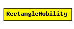

File: Mobility/RectangleMobility.ned
C++ definition: click here
Moves the node around a rectangle.
See also: ChannelControl
Author: Andras Varga
The following diagram shows usage relationships between modules, networks and channels. Unresolved module (and channel) types are missing from the diagram. Click here to see the full picture.
| Name | Type | Description |
|---|---|---|
| debug | bool | debug switch |
| x1 | numeric const | rectangle is denoted by the (x1,y1) and (x2,y2) coords |
| y1 | numeric const | |
| x2 | numeric const | |
| y2 | numeric const | |
| startPos | numeric const | in range [0.0,4.0): topleft=0, topright=1, bottomright=2, bottomleft=3 |
| speed | numeric const | speed of the host (in m/s) |
| updateInterval | numeric const | time interval to update the hosts position |
simple RectangleMobility parameters: debug : bool, // debug switch x1: numeric const, // rectangle is denoted by the (x1,y1) and (x2,y2) coords y1: numeric const, x2: numeric const, y2: numeric const, startPos: numeric const, // in range [0.0,4.0): topleft=0, topright=1, bottomright=2, bottomleft=3 speed: numeric const, // speed of the host (in m/s) updateInterval : numeric const; // time interval to update the hosts position endsimple